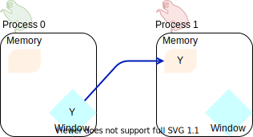
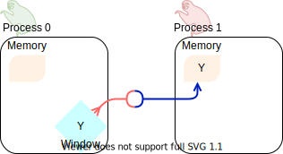
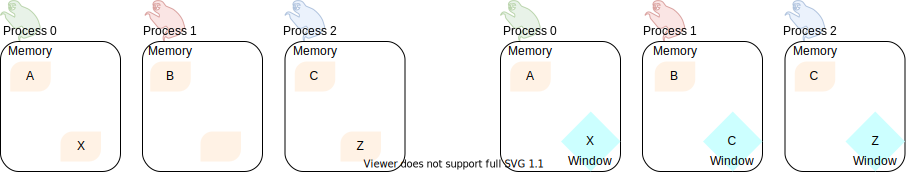

One-sided communication: basic concepts¶
Questions
How can we optimize communication?
Objectives
Learn about functions for remote-memory access (RMA)
RMA:
MPI_Get,MPI_Put,MPI_AccumulateWindows:
MPI_Win_create,MPI_Win_allocate,MPI_Win_allocate_shared,MPI_Win_create_dynamic
You are already familiar with the MPI_Send/MPI_Recv communication
pattern in MPI. This pattern is also called two-sided communication: the two
processes implicitly synchronize with each other.
It is like calling up someone: you wait for the other person to pick up to actually deliver your message.

Two-sided communication between two sloths. Both of them are active
participants in the communication: the MPI_Send has to be matched by
an MPI_Recv.¶
However, this is not always the most optimal pattern for transferring data. MPI offers routines to perform remote memory access (RMA), also known as one-sided communication, where processes can access data on other processes, as long as it is made available in special memory windows.
Proceeding with our telecommunications analogy: one-sided communication resembles an email. Your message will sit in your friend’s inbox, but you are immediately free to do other things after hitting the send button!
Discussion
What could be problematic with one-sided communication?
What would be the advantages of using one-sided communication?
What would be the disadvantages?
At a glance: how does it work?¶
Let us look at the following figure, what routines are available in MPI for process 0 communicate a variable in its local memory to process 1?
Steve, the sloth on the left, would like to send Alice, the sloth on the
right, the data in its Y variable. This data is stored in Steve’s local
memory, depicted as a yellow box.¶
It is foundational to MPI that every interaction between processes be explicit, so a simple assignment will not do. First, we must make a portion of memory on the target process, process 1 in this case, visible for process 0 to manipulate. We call this a window and we will represent it as a blue diamond.

We call collective routines, provided by MPI, to open a memory window on each process in the communicator. Both the target and origin processes will expose a portion of their memory through their respective windows.¶
Once a window into the memory of process 1 is open, process 0 can access it and manipulate
it. Process 0 can put (store) data in its local memory into the memory window of process
1, using MPI_Put:

The origin process (left sloth) puts data in the memory window of the
target process (right sloth).
The MPI_Put routine is represented with a red line whose arrowhead touches the
origin process of the call.¶
In this example, process 0 is the origin process: it participates actively in
the communication by calling the RMA routine MPI_Put. Process 1
in the target process.
Conversely, process 0 might have populated its memory window with some data: any
other process in the communicator can now get (load) this data, using MPI_Get:

The origin process (right sloth) gets data in the memory window of the
target process (left sloth).
The MPI_Get routine is represented with a blue line whose arrowhead touches the
origin process.¶
In this scenario, process 1 is the origin process: it participates actively in the
communication by calling the RMA routine MPI_Get. Process 0 is
the target process.
Graphical conventions
We have introduced these graphical conventions:
What kind of operations are being carried out?


- 

- 

Solution
A is the correct answer. Process 1 initiates the one-sided memory access, in order to put (store) the contents of its local memory to the remote memory window opened on process 0.
C is the correct answer. This is the standard, blocking two-sided communication pattern in MPI.
D is the correct answer. Process 1 initiates the one-sided memory access in order to get (load) the contents of the remote memory window on process 0 to its local memory.
Both B and D are valid answers. The figure depicts a memory operation within process 0, which does not involve communication with any other process and thus pertains the programming language and not MPI.
D is the correct answer. This is the standard, blocking two-sided communication pattern in MPI: it does not matter whether the message stems from memory local to process 0 or its remotely accessible window.
B is the correct answer. Different processes can only interact with explicit two-sided communication or by first publishing to their remotely accessible window.
RMA anatomy¶
One-sided communication in MPI is achieved in three steps, which map onto three sets of functions:
- Windows
Make memory available on each process for remote memory accesses. We use memory windows, which are objects of type
MPI_Winproviding handles to remotely-accessible memory. MPI provides 4 collective routines for the creation of memory windows:MPI_Win_allocateallocates memory and creates the window object.MPI_Win_createcreates a window from already allocated memory.MPI_Win_allocate_sharedcreates a window from already allocated MPI shared memory.MPI_Win_create_dynamiccreates a window from allocated memory, but the window-memory pairing is deferred.
A handle of type
MPI_Winmanages memory made available for remote operations on all ranks in the communicator. Memory windows must be explicitly freed after use withMPI_Win_free.- Load/store
Load/store/transform data in remote windows. We can identify an origin and a target process. At variance with two-sided communication, the origin process fully specifies the data transfer: where the data comes from and where it is going to. There are three main groups of MPI routines for this purpose:
Put
MPI_PutandMPI_RputGet
MPI_GetandMPI_RgetAccumulate
MPI_Accumulate,MPI_Raccumulateand variations thereof.
- Synchronization
Ensure that the data is available for remote memory accesses. The load/store routines are non-blocking and the programmer must take care that subsequent accesses are safe and correct. How synchronization is achieved depends on the one-sided communication paradigm adopted:
Active if both origin and target processes play a role in the synchronization. This is indeed the message passing model of parallel computation.
Passive if the origin process orchestrates data transfer and synchronization. Conceptually, this is closely related to the shared memory model of parallel computation: the window is the shared memory in the communicator and every process can operate on it, seemingly independently of each other.
There are three sets of routines currently available in MPI:
MPI_Win_fencethis achieves synchronization in the active target communication paradigm.MPI_Win_start,MPI_Win_complete,MPI_Win_post,MPI_Win_waitare also used in the active target communication paradigm.MPI_Win_lock,MPI_Win_unlockwhich enables synchronization in the passive target paradigm.
We will discuss synchronization further in the next episode One-sided communication: synchronization.

The timeline of window creation, calls to RMA routines, and synchronization
in an application which uses MPI one-sided communication.
The creation of MPI_Win objects in each process in the communicator
allows the execution of RMA routines. Each access to the window must be
synchronized: to ensure safety and correctness of the application.
Note that any interaction with the memory window must be protected by
calls to synchronization routines: even local load/store and/or two-sided
communication.
The events in between synchronization calls are said to happen in epochs.¶
Type-along
Type along showing two processes talking with RMA.
Discussion
How could this be achieved with two-sided communication? We will revisit this example when talking about non-blocking communication.
Window creation¶
The creation of MPI_Win objects is a collective operation: each process in
the communicator will reserve the specified memory for remote memory accesses.
Use this function to allocate memory and create a window object out of it.
int MPI_Win_allocate(MPI_Aint size,
int disp_unit,
MPI_Info info,
MPI_Comm comm,
void *baseptr,
MPI_Win *win)
We can expose an array of 10 double-s for RMA with:
// allocate window
double *buf;
MPI_Win win;
MPI_Win_allocate((MPI_Aint)(10 * sizeof(double)), sizeof(double),
MPI_INFO_NULL, MPI_COMM_WORLD, &buf, &win);
// do something with win
// free window and the associated memory
MPI_Win_free(&win);
Parameters
sizeSize in bytes.
disp_unitDisplacement units. If
disp_unit = 1, then displacements are computed in bytes. The use of displacement units can help with code readability and is essential for correctness on heterogeneous systems, where the sizes of the basis types might differ between processes. See also Derived datatypes.infoAn info object, which can be used to provide optimization hints to the MPI implementation. Using
MPI_INFO_NULLis always correct.commThe (intra)communicator.
baseptrThe base pointer.
winThe window object.
With this routine you can tell MPI what memory to expose as window. The memory must be already allocated and contiguous, since it will be specified in input as base address plus size in bytes.
int MPI_Win_create(void *base,
MPI_Aint size,
int disp_unit,
MPI_Info info,
MPI_Comm comm,
MPI_Win *win)
What if the memory is not allocated? We advise to use MPI_Alloc_mem:
// allocate memory
double *buf;
MPI_Alloc_mem((MPI_Aint)(10 * sizeof(double)), MPI_INFO_NULL, &buf);
// create window
MPI_Win win;
MPI_Win_create(buf, (MPI_Aint)(10 * sizeof(double)), sizeof(double),
MPI_INFO_NULL, MPI_COMM_WORLD, &win);
// do something with win
// free window
MPI_Win_free(&win);
// free memory
MPI_Free_mem(buf);
You must explicitly call MPI_Free_mem to deallocate memory obtained
with MPI_Alloc_mem.
Parameters
baseThe base pointer.
sizeSize in bytes.
disp_unitDisplacement units. If
disp_unit = 1, then displacements are computed in bytes. The use of displacement units can help with code readability and is essential for correctness on heterogeneous systems, where the sizes of the basis types might differ between processes. See also Derived datatypes.infoAn info object, which can be used to provide optimization hints to the MPI implementation. Using
MPI_INFO_NULLis always correct.commThe (intra)communicator.
winThe window object.
Note
With the term memory window or simply window we refer to the memory, local to each process, reserved for remote memory accesses. A window object is instead the collection of windows of all processes in the communicator and it has type
MPI_Win.The memory window is usually a single array: the size of the window object then coincides with the size of the array. If the base type of the array is a simple type, then the displacement unit is the size of that type, e.g.
doubleandsizeof(double). You should use a displacement unit of 1 otherwise.
RMA operations¶
Store data from the origin process to the memory window of the target process. The origin process is the source, while the target process is the destination.
int MPI_Put(const void *origin_addr,
int origin_count,
MPI_Datatype origin_datatype,
int target_rank,
MPI_Aint target_disp,
int target_count,
MPI_Datatype target_datatype,
MPI_Win win)
Load data from the memory window of the target process to the origin process. The origin process is the destination, while the target process is the source.
int MPI_Get(void *origin_addr,
int origin_count,
MPI_Datatype origin_datatype,
int target_rank,
MPI_Aint target_disp,
int target_count,
MPI_Datatype target_datatype,
MPI_Win win)
Parameters
Both MPI_Put and MPI_Get are non-blocking: they are completed
by a call to synchronization routines.
The two functions have the same argument list. Similarly to MPI_Send
and MPI_Recv, the data is specified by the triplet of address, count,
and datatype.
For the data at the origin process this is: origin_addr,
origin_count, origin_datatype.
On the target process, we describe the buffer in terms of displacement,
count, and datatype: target_disp, target_count, target_datatype.
The address of the buffer on the target process is computed using the base
address and displacement unit of the MPI_Win object:
target_addr = win_base_addr + target_disp * disp_unit
With MPI_Put, the origin triplet specifies the local send
buffer; while with MPI_Get it specifies the local receive
buffer.
The target_rank parameter is, as the name suggests, the rank of the
target process in the communicator.
Store data from the origin process to the memory window of the target process and combine it using one the predefined MPI reduction operations.
int MPI_Accumulate(const void *origin_addr,
int origin_count,
MPI_Datatype origin_datatype,
int target_rank,
MPI_Aint target_disp,
int target_count,
MPI_Datatype target_datatype,
MPI_Op op,
MPI_Win win)
The argument list to MPI_Accumulate is the same as for MPI_Put,
with the addition of the op parameter with type MPI_Op, which
specifies which reduction operation to execute on the target process.
This routine is elementwise atomic: accesses from multiple processes will
be serialized in some order and no race conditions can thus occur. You still
need to exercise care though: reductions are only deterministic if the
operation is associative and commutative for the given datatype. For
example, MPI_SUM and MPI_PROD are neither associative nor
commutative for floating point numbers!
Other routines for RMA operations are:
- Request-based variants
These routines return a handle of type
MPI_Requestand synchronization can be achieved withMPI_Wait.MPI_RgetMPI_RputMPI_RaccumulateMPI_Rget_accumulate
- Specialized accumulation variants
These functions perform specialized accumulations, but are conceptually similar to
MPI_Accumulate.MPI_Get_accumulateMPI_Fetch_and_opMPI_Compare_and_swap
Describe the sequence MPI calls connecting the before and after schemes.

Window creation with
MPI_Win_allocate.Window creation with
MPI_Win_createfollowed byMPI_Alloc_mem.Dynamic window creation with
MPI_Win_create_dynamic.Memory allocation with
MPI_Alloc_memfollowed by window creationMPI_Win_create.
- 
Window creation with
MPI_Win_allocateandMPI_Getfrom origin process 2 to target process 1.Window creation with
MPI_Win_create_dynamicandMPI_Putfrom origin process 1 to target process 2.Window creation with
MPI_Win_createandMPI_Getfrom origin process 1 to target process 2.Window creation with
MPI_Win_createandMPI_Putfrom origin process 2 to target process 1.
Solution
Both options A and D are correct. With option A, we let MPI allocate memory on each process and create a
MPI_Winwindow object. With option C, the memory allocation and window object creation are decoupled and managed by the programmer. If you have the choice, option A should be preferred: the MPI library might be able to better optimize window creation.Option D is correct. The memory is already allocated on each process, maybe through use of
MPI_Alloc_mem, and the window can be created with a call toMPI_Win_create. The subsequent data movement is a remote store operation. The callMPI_Putis issued by process 2, the origin process, to store itsCvariable to the memory window of process 1, the target process.